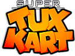

SuperTuxKart
Dieser Artikel wurde für die folgenden Ubuntu-Versionen getestet:
Ubuntu 16.04 Xenial Xerus
Ubuntu 14.04 Trusty Tahr
Zum Verständnis dieses Artikels sind folgende Seiten hilfreich:
Ein Terminal öffnen, optional
Pakete aus dem Quellcode erstellen, optional
Archive entpacken, optional
Root-Rechte, optional
Einen Editor öffnen, optional

SuperTuxKart  ist ein freies 3D-Kart-Rennspiel, bei dem es mehr um Spaß als um Realismus geht. Wie bei Super Mario Kart gilt es, die Konkurrenz nach Möglichkeit zu behindern. Ziel des Spiels bleibt dabei, möglichst als Erster die Ziellinie zu überqueren. Es stehen insgesamt 12 Rennstrecken, Zeit-, Einzel- und Grandprix-Rennen sowie ein Multiplayermodus via Splitscreen zur Verfügung. Dazu gibt es noch jede Menge zusätzliche Karts und Strecken als Add-ons.
ist ein freies 3D-Kart-Rennspiel, bei dem es mehr um Spaß als um Realismus geht. Wie bei Super Mario Kart gilt es, die Konkurrenz nach Möglichkeit zu behindern. Ziel des Spiels bleibt dabei, möglichst als Erster die Ziellinie zu überqueren. Es stehen insgesamt 12 Rennstrecken, Zeit-, Einzel- und Grandprix-Rennen sowie ein Multiplayermodus via Splitscreen zur Verfügung. Dazu gibt es noch jede Menge zusätzliche Karts und Strecken als Add-ons.
Die Steuerung kann über die Tastatur oder andere Controller erfolgen.
| SuperTuxKart |
| Multiplayer |
| Einzelrennen |
Installation¶
Folgendes Paket muss installiert [1] werden:
supertuxkart (universe)
 mit apturl
mit apturl
Paketliste zum Kopieren:
sudo apt-get install supertuxkart
sudo aptitude install supertuxkart
Aktuelle Version kompilieren¶
Da von SuperTuxKart nur recht selten neue Versionen veröffentlicht und diese wiederum einige Zeit brauchen, bis sie ihren Weg in die offiziellen Paketquellen finden, können erfahrene Nutzer die aktuelle Entwicklungsversion kompilieren. Auf diese Art und Weise profitiert man von den letzten Änderungen. Möglicherweise kann eine experimentelle Änderung jedoch dazu führen, dass die Version überhaupt nicht funktioniert.
Zum Herunterladen des Quelltextes wird Git und Subversion benötigt. Danach öffnet man ein Terminalfenster [3] um mit den folgenden Befehlen die aktuelle Entwicklerversion herunterzuladen:
git clone https://github.com/supertuxkart/stk-code.git svn checkout https://svn.code.sf.net/p/supertuxkart/code/stk-assets stk-assets
Befehl zum Installieren der Build-Abhängigkeiten:
sudo apt-get build-dep supertuxkart
sudo aptitude build-depends supertuxkart
Nun kann man in den Ordner stk-code wechseln und beginnt das Kompilieren [4]:
cd stk-code mkdir build cd build cmake .. make -j2
Das Spiel kann jetzt mit einem Doppeklick auf stk-code/build/bin/supertuxkart gestartet werden. Möchte man für das Starten einen Menüeintrag oder ein Desktop-Symbol verwenden, kann man sich dafür einen eigenen Programmstarter anlegen.
Aktualisieren¶
Da SuperTuxKart sich ständig weiterentwickelt, empfiehlt sich ab und an ein Update. Dafür öffnet man ein Terminal und gibt den folgenden Text ein:
cd stk-assets svn up cd ../stk-code git pull origin master cd ..
Danach kann man, wie oben beschrieben, den Quelltext des Spiels neu kompilieren [4] und damit aktualisieren.
Spiel-Modi¶
Verschiedene Spielmodi stehen für Einzelspieler und im Story-Modus zur Verfügung:
| Spiel-Modi | |
| Art | Bedeutung |
| Grand Prix | Eine Reihe von Rennen, in denen man möglichst viele Punkte sammeln muss. |
| Quick Race | Ein einziges Rennen (zwischen 1 und 99 Runden). |
| Time Trial | Ein Rennen mit nur einem Kart, wobei es darum geht, die Runde in möglichst kurzer Zeit zu schaffen. |
| Follow the Leader | Hinter dem Führenden bleiben, nach Ablauf eines Countdowns scheidet das Kart vor dem Leader aus. |
| 3 Treffer Kampf | (Nur im Multiplayer) Treffe deinen Gegner 3 mal, um zu gewinnen |
Multiplayer¶
Momentan wird das gemeinsame Spielen an einem Rechner per Splitscreen unterstützt. Man kann mit bis zu vier Spielern an einen Computer spielen. Es wird aber bald einen Mehrspielermodus über das Internet geben.
Items¶
| Items | |
| Symbol | Bedeutung |
| Beim Durchfahren erhält man eines der aufgezählten Items. | |
| Der Anker bremst das führende Kart ab. | |
| Der Fallschirm bremst alle vorausfahrenden Karts ab. | |
| Der Kuchen wird auf den nächsten Gegner geworfen, geeignet für die kurze und gerade Strecken. | |
| Wirf ihn vorwärts um dich an einen Gegner zu hängen, oder wirf ihn während du zurück blickst, um einem Gegner die Sicht zu versperren. | |
| Beschleunigt dein Kart für eine kurze Zeit und es fährt über der Höchstgeschwindigkeit. | |
| Bowlingkugel - prallt von Wänden ab. Wird nach hinten geworfen, wenn nach hinten geschaut wird. | |
| Eine klebrige Rosa Masse an dem das Kart hängen bleibt. | |
| Auf der Strecke sind Nitros verteilt. Insgesamt kann man bis zu 10 Nitros sammeln. Nitros erlauben einen Geschwindigkeits-Schub bis alle Nitros verbraucht sind. | |
| Fährt man in eine Banane wird man durch einen Fallschirm oder Amboss abgebremst. Oder man erhält eine Bombe, die man schnell an ein anderes Kart abgeben sollte. (Sonst macht es "BUMM") | |
| Wandler - für kurze Zeit werden Kisten und Bananen sowie Nitro und Kaugummi vertauscht. | |
Weitere Besonderheiten, sind etwa der Windschatten (ermöglicht nach einer kurzen Zeit einen Sprint am Gegner vorbei), Speed-Pads (ermöglichen eine etwas längere Beschleunigung) sowie Drift (verschobene Perspektive und Beschleunigung).
Tastenbelegung¶
Die folgende Belegung gilt ab Version 0.8.
| Steuerung | |
| Taste(n) | Aktion |
| ↑ | Beschleunigen |
| ↓ | Bremsen |
| ← + → | Lenkung nach links/rechts |
| V | Driften |
| N | Nitro |
| ⌫ | Retten |
| Schießen | |
| B | Zurückschauen |
Cheats - Strecken freischalten¶
Hat man selbst (oder die Kinder) keine Zeit oder Lust, alle spielerischen Herausforderungen zu lösen, um weitere Rennstrecken freigeschaltet zu bekommen, kann man diese auch direkt in einer Konfigurations-Datei freischalten.
Dazu öffnet man die Datei ~/.config/supertuxkart/challenges.xml mit einem Editor[7] und ersetzt alle solved="false" durch solved="true". Nach einem Neustart stehen alle Strecken zur Verfügung
Infobox¶
| SuperTuxKart | |
| Genre: | Rennspiel |
| Sprache: |  |
| Veröffentlichung: | 2006+ |
| Systemvoraussetzungen: | 1 GHz Prozessor / 3D-Grafikkarte mit 32 MB RAM |
| Medien: | Download |
| Läuft mit: | nativ |

- Erstellt mit Inyoka
-
 2004 – 2017 ubuntuusers.de • Einige Rechte vorbehalten
2004 – 2017 ubuntuusers.de • Einige Rechte vorbehalten
Lizenz • Kontakt • Datenschutz • Impressum • Serverstatus -
Serverhousing gespendet von